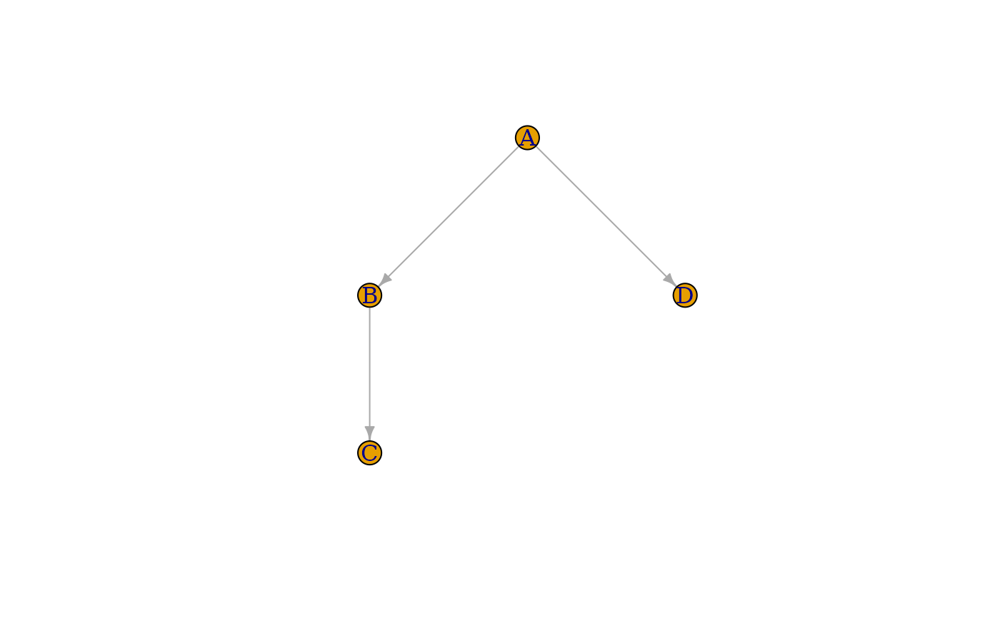
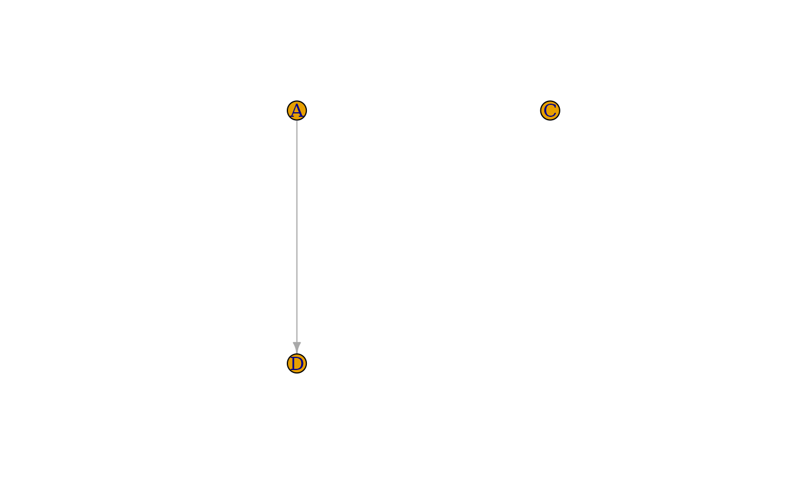
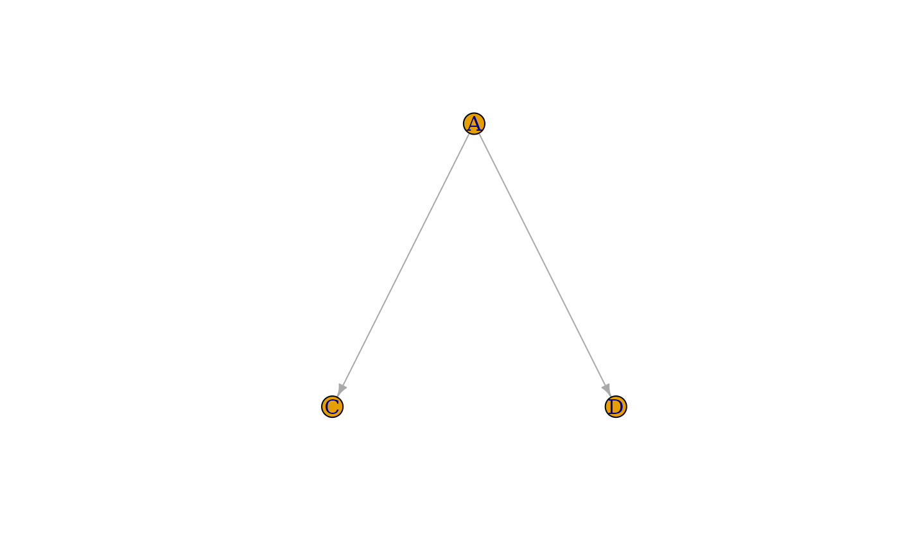

Similar to an induced subgraph, but creates shortcut edges between vertices that were primarily connected.
Value
The minimized graph, which is different in general from an induced subgraph because of edges management.
Examples
# Define the original graph
df_edges = data.frame(from=c('A', 'A', 'B'), to=c('B', 'D', 'C'))
G = igraph::graph_from_data_frame(df_edges)
plot(G, layout=layout_tree)

# Keep the specified vertices (Remove vertex 'B')
vs = c('A', 'C', 'D')
G_induced = igraph::induced_subgraph(G, vs)
plot(G_induced, layout=layout_tree)

G_reduced = minimize_graph(G, vs)
plot(G_reduced, layout=layout_tree)
